"There is nothing more truly artistic than to love people" -Van Gogh
| 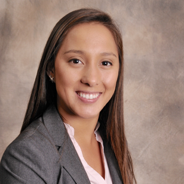 | I am a business student at California State University, Monterey Bay and I am originally from Orange County, CA. I will graduate this upcoming Summer 2018. I spent the last year studying in Basel, Switzerland. During that time, I re-kindled my love for traveling and visited 12 countries within a year. It is one of my passions to get lost in places I have not been with new people and cultures. I grew up in Southern California, but I am always looking to change my current location. It is a dream of mine to work in another country or be able to travel for work.
|
Three books I am reading right now
| 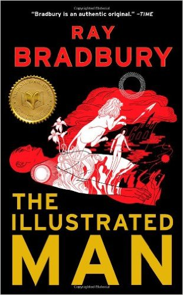 | 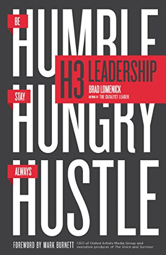 | 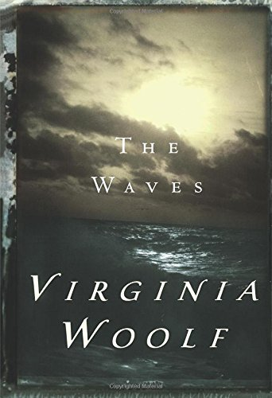 |
I am a senior finishing up my final semester at California State University Monterey Bay, which is located in Marina, CA. I am studying business with a concentration in international business and management. I am planning to graduate in the Summer of 2018. I am planning on taking the LSAT in September 2018 as I would like to attend law school upon completion of my Bachelor’s degree. I would also like to align service work and promoting peach within my future career goals and aspirations, whatever those may be at the time.
Education
| Year | Degree | School | Major |
|---|---|---|---|
| 2015 | AA-T Degree | Irvine Valley College
Irvine, CA School Link |
General Education |
| 2015 | AA-T Degree | Saddleback Community College
Mission Viejo, CA School Link |
General Education |
| 2018 | Bachelor Degree | California State University, Monterey Bay
Marina, CA School Link |
Business Administration |
| 2017-2018 | Education Abroad | FHNW-Switzerland
Basel, CH School Link |
International Management |
Skills and Honors
Skills
- MS Office, AutoCad, CorelDraw, SketchUp, SolidWorks, WordPress
- Basic HTML, VBA
- Email and Internet
- Excellent Time Management
- Customer Service
Honors
- Rookie Rotarian of the Year 2016
- Deans List 2016-2017
Outside of my academic life, I strive to give back to my community as much as possible. Being part of Rotary International has allowed me to accomplish this. Rotary International is a global service organization that is involved in projects in local areas as well.
Service projects include Dental and Eye Clinics in Ensenada, Mexico, the annual food drive in Irvine, CA, and house builds in Ensenada, Mexico.
| 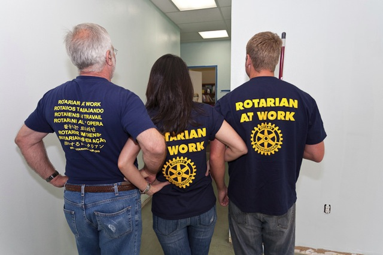 | 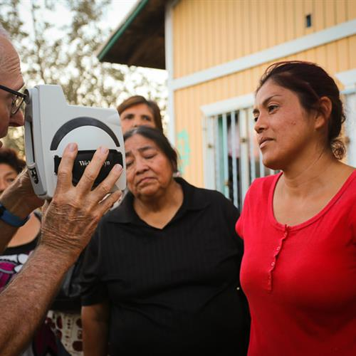 | 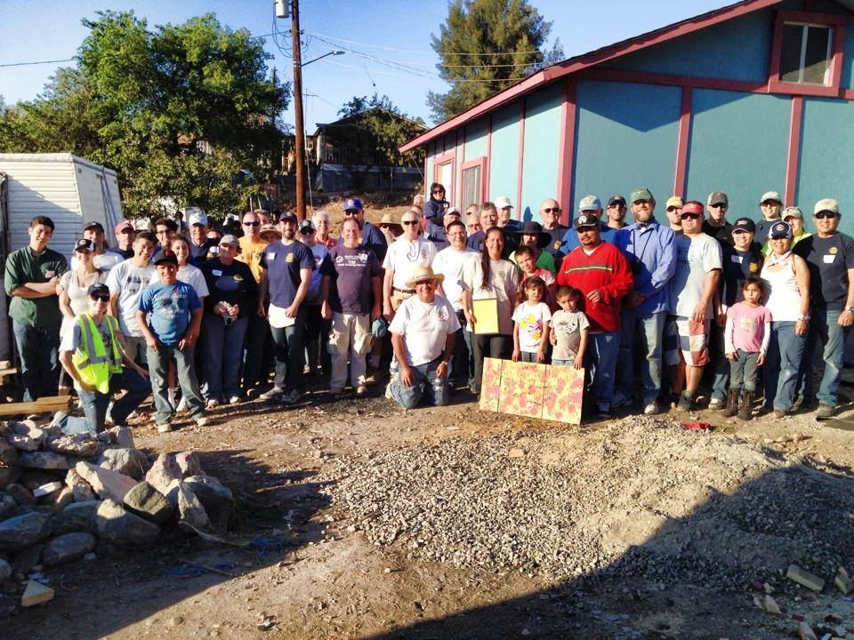 |
| 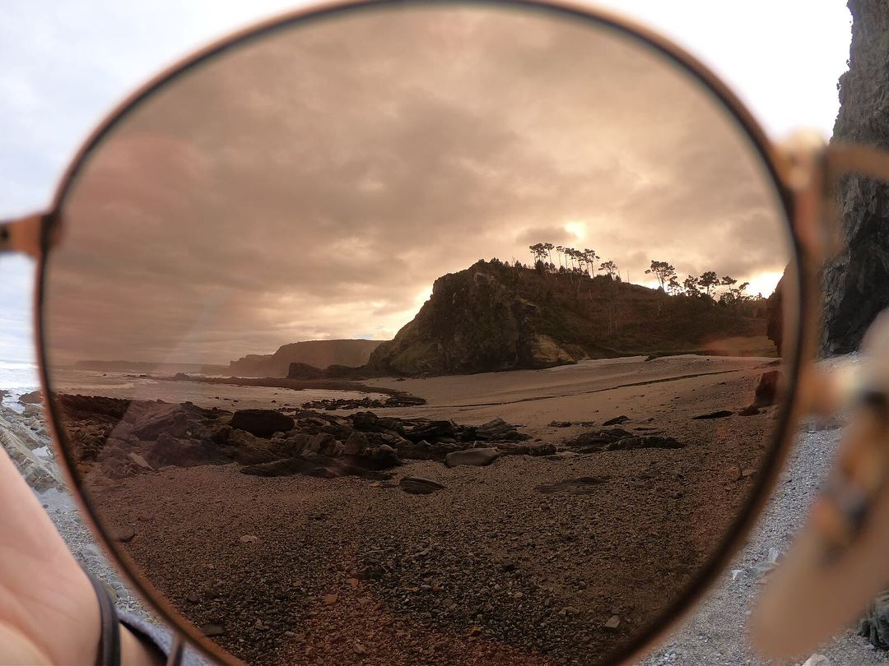 | 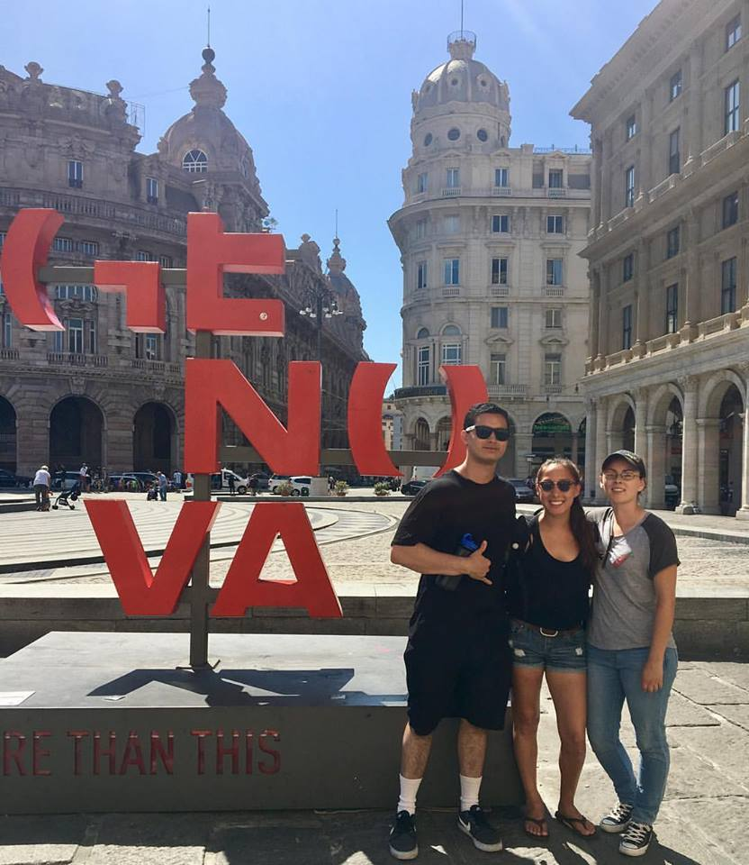 |
| 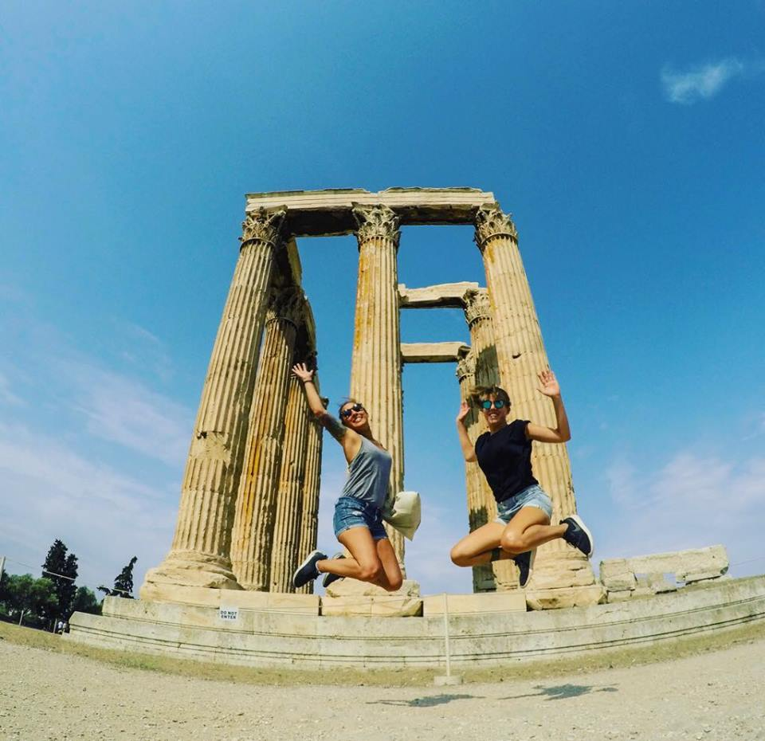 | 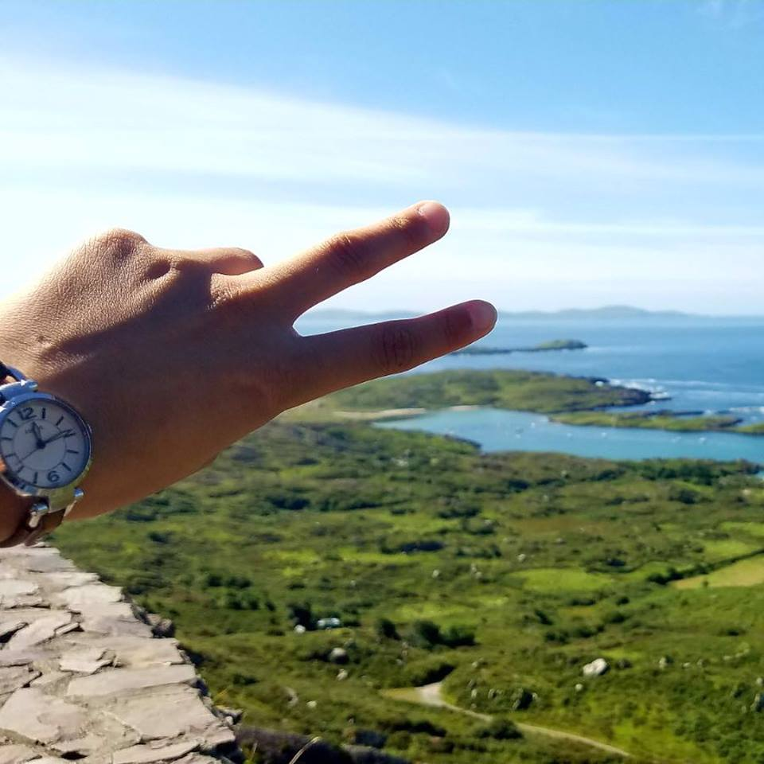 | 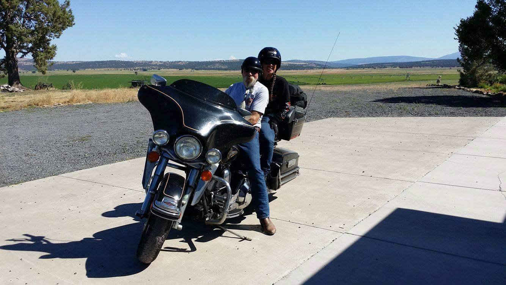 |